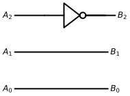
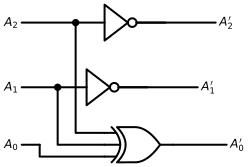
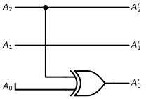
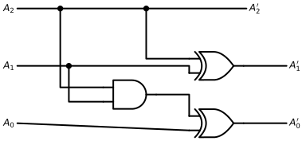

On the surface, qubits and protobits appear fundamentally incompatible. Yet, we have already proven that the molecular gates achieve universal computation. Any mathematical operation—including complex arithmetic and phase rotations—can be synthesized algebraically. All that is required is the right geometric mapping.
On the surface, qubits and protobits appear fundamentally incompatible:
Qubits are described by state vectors with negative and complex probability amplitudes (\(\mathbb{C}^2\)). This complex phase allows wavefunctions to interfere constructively or destructively (adding or subtracting amplitudes).
Protobits, operating within stochastic transition matrices, are defined purely over real, non-negative probabilities (\(p \in [0, 1]\)), with no native complex phase.
Yet, we have already proven that the molecular gates achieve universal computation. Any mathematical operation—including complex arithmetic and phase rotations—can be synthesized algebraically. All that is required is the right geometric mapping.
Deconstructing the Bloch Sphere
Geometrically, a single qubit lives on the continuous surface of a three-dimensional unit sphere: the Bloch Sphere.
To reconstruct the full expressive richness of a spherical state space using only positive-probability protobits, linear algebra dictates that we need a minimum of three independent dimensions.
To completely define the state of a qubit without invoking imaginary numbers in the underlying hardware, we decompose the state across three distinct functional protobits:
The Presence Protobit (\(A_2\)):
Encodes the vertical projection (along the \(Z\)-axis), determining whether the measurement collapses toward \(|0\rangle\) or \(|1\rangle\).
The Imaginary Phase Protobit (\(A_1\)):
Governs circular phase along the \(Y\)-axis, encoding the imaginary depth of the quantum state (\(+1\) or \(+i\)).
The Sign Phase Protobit (\(A_0\)):
Governs real interference along the \(X\)-axis, determining whether wave amplitudes add constructively (\(+1\)) or destructively (\(-1\)).
The 8 Extremal Basis States
When these three protobits are combined through the Kronecker product, they span an 8-dimensional configuration space (\(2^3 = 8\)).
These 8 discrete basis states map directly to the 8 vertices of a state cube, perfectly capturing the cardinal projections along with their fundamental discrete phase orientations (\(\pm 1, \pm i\)):
By taking convex linear combinations (superpositions) across these 8 positive protobit states, we can reconstruct any arbitrary point\((\theta, \phi)\) on the Bloch sphere.
The mystery of complex quantum phases dissolves into real, positive geometry. Three simple carbon bonds are all that nature needs to house a complete quantum qubit.
Quantum Logic Gates as Cube Rotations
Implementing the continuous rotation of a quantum logic gate might appear daunting at first glance. In our discrete framework, however, the problem simplifies drastically: all we need to specify is where the 8 vertices of our state cube map to.
Think of tracking an airplane flying across a pitch-black night sky:
Inside the cockpit, the pilot relies on continuous gyroscopes and attitude instruments. But an observer standing on the ground below cannot see the fuselage of the plane at all. All they can see are the plane’s exterior navigation lights:
* A red light on the left wingtip,
* A green light on the right wingtip,
* A white beacon on the tail / belly.
Even though the observer only tracks three discrete points of light, they can unambiguously deduce the airplane’s full three-dimensional spatial orientation.
If the observer initially sees the red light on the left, the green light on the right, and the white beacon underneath—and a moment later observes the red light on the right, the green light on the left, and the white beacon on top—they know with absolute mathematical certainty that the aircraft has executed a \(180^\circ\) roll.
We treat quantum logic gates in precisely the same way:
We do not need to model an intractable, continuous spherical rotation across the entire continuum of the Bloch sphere. We simply track the permutation of our 8 discrete basis vertices.
By tracking how these extremal “navigation lights” permute across our protobit coordinates, the global unitary transformation naturally takes care of itself.
Elementary Single-Qubit Gates
The standard Pauli gates—\(X\), \(Y\), and \(Z\), along with the phase gate \(S\)—are classified as “simple” in our framework for two structural reasons:
1. They operate strictly on a single logical qubit (one 3-protobit channel in, one 3-protobit channel out).
2. Every vertex of our 8-state cube maps cleanly and deterministically onto another exact vertex of the cube. There is no splitting of amplitudes or fractional dispersion across vertices.
Consequently, in this discrete representation, implementing a quantum gate reduces fundamentally to implementing a truth table permutation.
Keep in mind that while these circuits are structurally composed of boolean logic components, they operate as quantum transition operators capable of manipulating protobit states. We established their mathematical foundation earlier in “A Refresher on Boolean Logic” using transition matrix formalism.
The X Gate (Pauli-X / Bit-Flip)
The \(X\) operator swaps the basis states \(|0\rangle \leftrightarrow |1\rangle\). It corresponds to a \(\pi\) (\(180^\circ\)) rotation around the \(X\)-axis of the Bloch sphere:
# Initialize canvas for the Pauli-X logic circuitwith schemdraw.Drawing() as d: d.config(fontsize=12, unit=2.5)# ==========================================# 1. Line A2 (MSB: Presence bit) -> Passes through a NOT gate# ==========================================# Input wire in_a2 = d.add(elm.Line().right(1.2).label("$A_2$", loc="left"))# NOT Gate (inverter) not_gate = d.add(logic.Not().right().at(in_a2.end))# Output wire d.add(elm.Line().right(1.2).at(not_gate.out).label("$A_2'$", loc="right"))# ==========================================# 2. Line A1 (Imaginary Phase bit) -> Straight wire (Identity)# ========================================== y_a1 = in_a2.start[1] -1.5 d.add( elm.Line() .right(3.8) .at((in_a2.start[0], y_a1)) .label("$A_1$", loc="left") .label("$A_1'$", loc="right") )# ==========================================# 3. Line A0 (LSB: Sign Phase bit) -> Straight wire (Identity)# ========================================== y_a0 = in_a2.start[1] -3.0 d.add( elm.Line() .right(3.8) .at((in_a2.start[0], y_a0)) .label("$A_0$", loc="left") .label("$A_0'$", loc="right") )

Molecular Equivalent
The Y Gate (Pauli-Y / Bit-and-Phase-Flip)
The \(Y\) operator flips the bit and simultaneously introduces an imaginary phase shift. It corresponds to a \(\pi\) (\(180^\circ\)) rotation around the \(Y\)-axis of the Bloch sphere:
\[Y = -i |1\rangle\langle 0| + i |0\rangle\langle 1| = \begin{bmatrix} 0 & -i \\ i & 0 \end{bmatrix}\]
with schemdraw.Drawing() as d: d.config(fontsize=12, unit=2.5)# ==========================================# 1. Inputs (Lignes de gauche)# ========================================== in_a2 = d.add(elm.Line().right(1.5).label("$A_2$", loc="left")) in_a1 = d.add(elm.Line().right(1.0).at((in_a2.start[0], in_a2.start[1] -1.8)).label("$A_1$", loc="left")) in_a0 = d.add(elm.Line().right(0.5).at((in_a2.start[0], in_a2.start[1] -3.4)).label("$A_0$", loc="left"))# ==========================================# 2. Branchement pour XOR sur A0# ==========================================# Points de piquage sur A2 et A1 d.add(elm.Dot().at(in_a2.end)) d.add(elm.Dot().at(in_a1.end))# Portes NOT sur A2 et A1 not_a2 = d.add(logic.Not().right().at(in_a2.end)) not_a1 = d.add(logic.Not().right().at(in_a1.end))# Sorties A2' et A1' d.add(elm.Line().right(2.2).at(not_a2.out).label("$A_2'$", loc="right")) d.add(elm.Line().right(2.2).at(not_a1.out).label("$A_1'$", loc="right"))# ==========================================# 3. Porte XOR à 3 entrées pour A0'# ==========================================# Position de la porte XOR en bas xor_gate = d.add( logic.Xor(inputs=3) .right() .at((in_a0.end[0] +1.8, in_a0.end[1])) )# Connexion A2 vers XOR.in1 (haut) d.add(elm.Wire("|-").at(in_a2.end).to(xor_gate.in1))# Connexion A1 vers XOR.in2 (milieu) d.add(elm.Wire("|-").at(in_a1.end).to(xor_gate.in2))# Connexion A0 vers XOR.in3 (bas) d.add(elm.Wire("|-").at(in_a0.end).to(xor_gate.in3))# Sortie A0' d.add(elm.Line().right(1.5).at(xor_gate.out).label("$A_0'$", loc="right"))

Molecular Equivalent
The Z Gate (Pauli-Z / Phase-Flip)
The \(Z\) operator leaves \(|0\rangle\) unchanged and flips the phase of \(|1\rangle\) by multiplying it by \(-1\). It corresponds to a \(\pi\) (\(180^\circ\)) rotation around the \(Z\)-axis of the Bloch sphere:
# Initialize canvas for the Pauli-Z logic circuitwith schemdraw.Drawing() as d: d.config(fontsize=12, unit=2.5)# 1. Line A2 (MSB) -> Straight wire with a branch tap going down to the XOR line_a2 = d.add(elm.Line().right(4.5).label("$A_2$", loc="left").label("$A_2'$", loc="right"))# 2. Line A1 (Middle) -> Pure straight wire (Identity) y_a1 = line_a2.start[1] -1.5 d.add( elm.Line() .right(4.5) .at((line_a2.start[0], y_a1)) .label("$A_1$", loc="left") .label("$A_1'$", loc="right") )# 3. Line A0 (LSB) -> Passes through a XOR gate controlled by A2 y_a0 = line_a2.start[1] -3.0# Place the XOR gate on line A0 xor_gate = d.add(logic.Xor().right().at((line_a2.start[0] +2.0, y_a0)))# Lead wire from Input A0 to XOR bottom input (in2) d.add(elm.Wire("|-").at((line_a2.start[0] , y_a0)).to(xor_gate.in2).label("$A_0$", loc="left"))# Output wire from XOR to A0' d.add(elm.Line().at(xor_gate.out).to((line_a2.end[0], y_a0)).label("$A_0'$", loc="right"))# 4. Control wire from Line A2 down into XOR top input (in1) tap_x = line_a2.start[0] +1.2 d.add(elm.Dot().at((tap_x, line_a2.start[1]))) # Branch junction on A2 d.add(elm.Line().down(2.5).at((tap_x, line_a2.start[1]))) d.add(elm.Wire("|-").to(xor_gate.in1))

Molecular Equivalent
The S Gate (Phase Gate / \(\pi/2\) Rotation)
The \(S\) gate leaves \(|0\rangle\) unchanged and introduces a \(\pi/2\) (\(90^\circ\)) phase rotation on \(|1\rangle\), multiplying it by \(i\). It corresponds to a quarter-turn rotation around the \(Z\)-axis of the Bloch sphere:
\[S = |0\rangle\langle 0| + i |1\rangle\langle 1| = \begin{bmatrix} 1 & 0 \\ 0 & i \end{bmatrix}\]
with schemdraw.Drawing() as d: d.config(fontsize=12, unit=2.5)# Coordonnées verticales des 3 lignes y2, y1, y0 =4.0, 2.0, 0.0 x_in =0.0# ==========================================# 1. Portes logiques# ==========================================# Porte AND pour (A2 AND A1) and_gate = d.add(logic.And().right().at((3.0, 1.0)))# Porte XOR pour A1' = A1 XOR A2 xor_a1 = d.add(logic.Xor().right().at((6.0, y1)))# Porte XOR pour A0' = A0 XOR (A2 AND A1) xor_a0 = d.add(logic.Xor().right().at((6.0, y0)))# ==========================================# 2. Câblage Ligne A2 (MSB) -> Identité pure vers A2'# ========================================== d.add(elm.Line().right(8.0).at((x_in, y2)).label("$A_2$", loc="left").label("$A_2'$", loc="right"))# Points de dérivation sur la ligne A2 d.add(elm.Dot().at((1.5, y2))) d.add(elm.Wire("|-").at((1.5, y2)).to(and_gate.in1)) d.add(elm.Dot().at((4.5, y2))) d.add(elm.Wire("|-").at((4.5, y2)).to(xor_a1.in1))# ==========================================# 3. Câblage Ligne A1# ========================================== d.add(elm.Line().right(1.8).at((x_in, y1)).label("$A_1$", loc="left")) d.add(elm.Dot().at((1.8, y1)))# Dérivation vers la porte AND d.add(elm.Wire("|-").at((1.8, y1)).to(and_gate.in2))# Fil principal vers la porte XOR de A1 d.add(elm.Wire("-|").at((1.8, y1)).to(xor_a1.in2))# Sortie A1' d.add(elm.Line().right(1.5).at(xor_a1.out).label("$A_1'$", loc="right"))# ==========================================# 4. Câblage Ligne A0 (LSB)# ==========================================# Entrée A0 vers l'entrée du bas de xor_a0 d.add(elm.Line().at((x_in, y0)).to(xor_a0.in2).label("$A_0$", loc="left"))# Sortie du AND vers l'entrée du haut de xor_a0 d.add(elm.Wire("-|").at(and_gate.out).to(xor_a0.in1))# Sortie A0' d.add(elm.Line().right(1.5).at(xor_a0.out).label("$A_0'$", loc="right"))

Molecular Equivalent
Portes logiques superposées
Hadamard
T
Portes logiques avec plus d’une entrée
Swap
Cnot
Portes logiques contrôlées
Cz
Toffoli (Ccnot)
Portes classiques avec une porte Toffoli
Rotations de base
\(R_x(\pi)\)
\(R_y(\pi)\)
\(R_z(\pi)\)
Phase
\(Ph(\pi)\)
\(Ph(\frac{\pi}{2})\)
Fraction de rotation
Portes logiques racines carrés
Circuits de mesure
Échantillonage
Recuit Simulé
Exemples classiques
Retour de phase quantique.
Transformations de fourrier quantique.
Speculations & Wild Thoughts
Quarks of Light: Modeling the Photon as a Truncated Tetrahedral Protobit Triplet
If a standard qubit can be mapped onto a 3-protobit manifold, could fundamental bosons like the photon be composite topologies of three protobits themselves?
Just as protons revealed their internal quark triplet, the polarization and helicity degrees of light (the Poincaré sphere) might simply be the macroscopic projection of an internal, truncated tetrahedral resonance cavity. A photon not as a point particle, but as an autonomous, self-closing loop of three coupled protobits traversing spacetime.
Spacetime as a Clifford Algebra of Protobits
Decomposing a single qubit into three protobits (\(A_2, A_1, A_0\)) reveals a profound mathematical bridge: it takes exactly \((m + n)\) binary protobits to span the full \(2^{m+n}\) multivector space of a Geometric Clifford Algebra \(\mathcal{C}\ell(m, n)\). For our single qubit, \(\mathcal{C}\ell(3, 0)\) requires \(3 + 0 = 3\) protobits, whose 8 cube vertices correspond precisely to the 8 geometric elements of 3D space: 1 scalar, 3 vectors, 3 bivector planes, and 1 pseudoscalar (\(i\)).
This invites a wild cosmological conjecture: what if the dimensionality of the universe simply reflects the number of entangled protobits?
Under this lens, 4D Minkowski spacetime (\(\mathcal{C}\ell(1, 3)\)) requires exactly 4 protobits (\(2^4 = 16\) states, the Dirac algebra of the relativistic electron), while grand unified particle theories (\(\mathcal{C}\ell(6)\) or \(\mathcal{C}\ell(8)\)) demand just 6 to 8 entangled bonds.
In this paradigm, continuous complex numbers are merely an emergent macroscopic illusion. Reality does not compute with abstract qubits in ethereal Hilbert spaces—it is a discrete geometric network, weaving the grammar of \(\mathcal{C}\ell(m, n)\) through the physical resonance of Protobits.